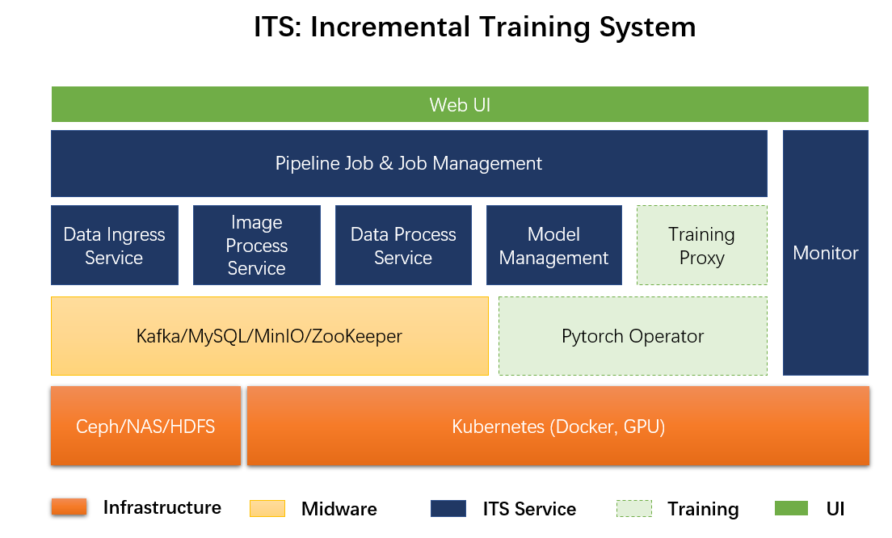

Selected Projects
Here is the summary of projects that I have done
1. A Kubernetes-based High-Dimensional Feature Clustering System
Company: Sensetime Research
Duration: Feb 2019 - Dec 2019
Role: Project Owner
Team Size: 5
Contribution as project owner:
- Requirement analysis & cross functional team engagement
- Project goal definiation for technical & business
- Delivery goal definiation and POC customer engagement for technical presales with named-account sales executive
- Defined R&D roadmap & timeline
Contribution as Architect
- Defined development roadmap and system architecture
- Led and worked with other four engineers to iteratively worked on project from 0-1
- Translated reserach-side ideas into workable engineering SDKs
- Worked on core Kubernetes Spark clustering pipeline and relevant K8S development
Buesiness Impact:
Delivered as the prototype for new version of billion-scale high-dimensional feature clustering system and merged into standard Sensetime platform project: Viper
System Architecture
 Clustered Result For Face Features
Clustered Result For Face Features

2. Facial Feature Incremental Training System
Company: Sensetime Research
Duration: Oct 2018 - Feb 2019
Role: Developer
Contribution as developer:
- Engaged in system architecture design
- Conducted initial project POC analysis and engine, infra level component design
- One of the first three developers to start inital coding stage
Buesiness Impact:
Project incubated into next version of Viper(De Facto Sensetime PaaS Platform standard component)
System Architecture

Major Pipeline